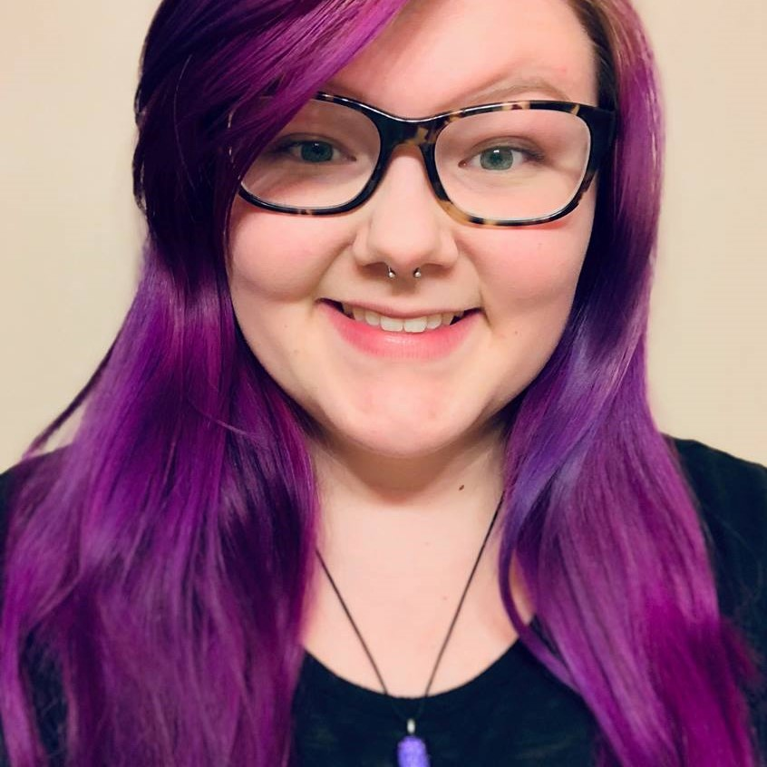

My name is Anna Newby and I am a junior in the IT Innovation program. I am minoring in MIS. I work part-time at Omaha Performing Arts as a Support Services Technician.
One of my favorite hobbies is playing Magic the Gathering. It is a trading card game (players collect cards, build decks, then compete with those decks).
In the IT Innovation program, we are asked to complete a capstone with 33 credit hours of courses of our choosing to support it. Many students enjoy the creative freedome that this affords and take advantage of it to work on their passion. Many students develop an app that they hope becomes a profitable venture outside of school.
Another one of my favorite things are my pets Ralfi, a Rat Terrier, and Socks, a kitten I rescued 6 months ago. Their excitement to see me when I come home is a joy that I look forward to every day!